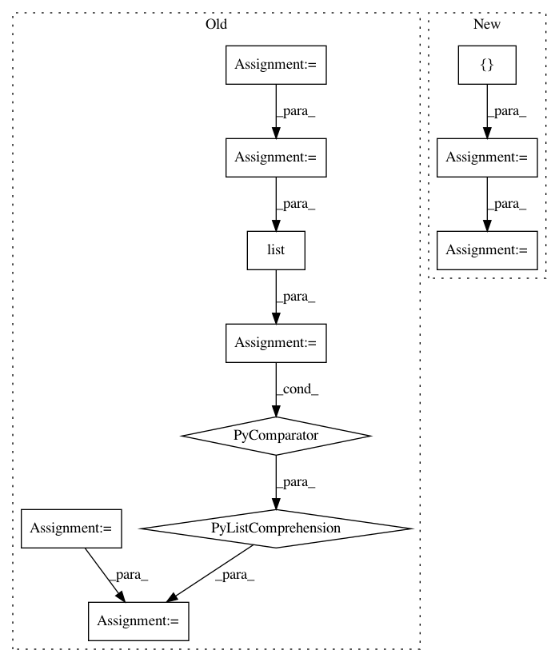

b470898504d2a077433a84e12a7c8078b2494760,dask_image/ndmeasure/__init__.py,,center_of_mass,#Any#Any#Any#,21
Before Change
index = index.T
type_mapping = collections.OrderedDict([
(("%i" % i), input.dtype) for i in _pycompat.irange(input.ndim)
])
out_dtype = numpy.dtype(list(type_mapping.items()))
default_1d = numpy.full((1,), numpy.nan, dtype=out_dtype)
func = functools.partial(
_utils._center_of_mass, shape=input.shape, dtype=out_dtype
)
com_lbl = labeled_comprehension(
input, labels, index,
func, out_dtype, default_1d[0], pass_positions=True
)
com_lbl = dask.array.stack([com_lbl[k] for k in type_mapping], axis=-1)
return com_lbl
After Change
// This only matters if index is some array.
index = index.T
out_dtype = numpy.dtype([("com", input.dtype, (input.ndim,))])
default_1d = numpy.full((1,), numpy.nan, dtype=out_dtype)
func = functools.partial(
_utils._center_of_mass, shape=input.shape, dtype=out_dtype
)
com_lbl = labeled_comprehension(
input, labels, index,
func, out_dtype, default_1d[0], pass_positions=True
)
com_lbl = com_lbl["com"]
return com_lbl
In pattern: SUPERPATTERN
Frequency: 3
Non-data size: 11
Instances
Project Name: dask/dask-image
Commit Name: b470898504d2a077433a84e12a7c8078b2494760
Time: 2018-10-01
Author: jakirkham@gmail.com
File Name: dask_image/ndmeasure/__init__.py
Class Name:
Method Name: center_of_mass
Project Name: tensorflow/models
Commit Name: f7b4c6de2037ebedf6bc8ea5979e81666d54534f
Time: 2020-12-01
Author: rathodv@google.com
File Name: research/object_detection/meta_architectures/center_net_meta_arch.py
Class Name:
Method Name: convert_strided_predictions_to_normalized_boxes
Project Name: nipy/dipy
Commit Name: defee23185b16afd836bad0a6cce7f791328666e
Time: 2020-02-03
Author: skab12@gmail.com
File Name: dipy/workflows/multi_io.py
Class Name: IOIterator
Method Name: file_existence_check